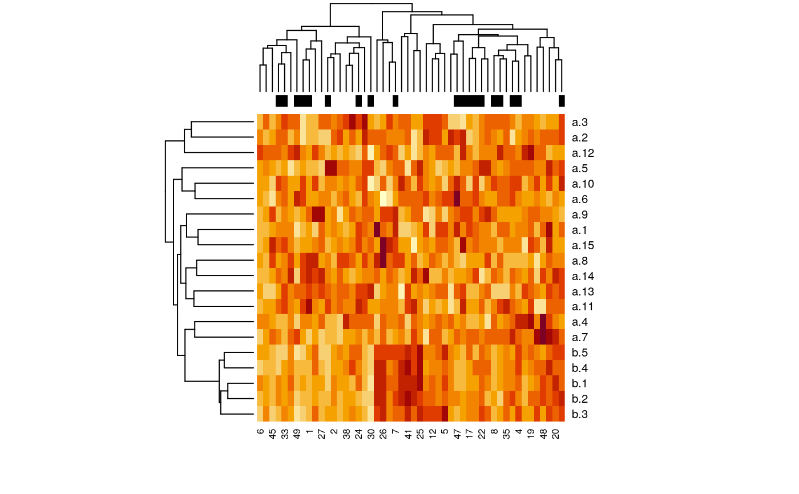

create.data.RdThis function creates multiple groups of predictor variables which may be correlated within each group, and binary or survival time (without censoring) response according to specified weights of the predictors.
create.data(nvars = c(100, 100, 100, 100, 600), cors = c(0.8, 0, 0.8, 0, 0), associations = c(0.5, 0.5, 0.3, 0.3, 0), firstonly = c(TRUE, FALSE, TRUE, FALSE, FALSE), nsamples = 100, censoring = "none", labelswapprob = 0, response = "timetoevent", basehaz = 0.2, logisticintercept = 0)
| nvars | integer vector giving the number of variables of each variable type. The number of variable types is equal to the length of this vector. |
|---|---|
| cors | integer vector of the same length as nvars, giving the population pairwise Pearson correlation within each group. |
| associations | integer vector of the same length as nvars, giving the associations of each type with outcome |
| firstonly | logical vector of the same length as nvars, specifying whether only the first variable of each type is associated with outcome (TRUE) or all variables of that type (FALSE) |
| nsamples | an integer giving the number of observations |
| censoring | "none" for no censoring, or a vector of length two c(a,b) for uniform U(a,b) censoring. |
| labelswapprob | This provides an option to add uncertainty to binary outcomes by randomly switching labels with probability labelswapprob. The probability of a label being swapped is independent for each observation. The value is ignored if response is "timetoevent" |
| response | either "timetoevent" or "binary" |
| basehaz | baseline hazard, used for "timetoevent" |
| logisticintercept | intercept which is added to X%*%Beta for "binary" |
This function simulates "predictor" variables in one or more groups, which are standard normally distributed. The user can specify the population correlation within each variable group, the association of each variable group to outcome, and whether the first or all variables of that type should be associated with outcome. The simulated response variable can be time to event with an exponential distribution, or binary survival with a logistic distribution.
Returns a list with items:
a summary of the variable types produced
weights of each variable in computing the outcome
covariance matrix used for generating potentially correlated random predictors
dataframe containing the predictors and response. Response is the last column for binary outcome ("outcome"), and the last two columns for timetoevent outcome ("time" and "cens")
Waldron L., Pintilie M., Tsao M.-S., Shepherd F. A., Huttenhower C.*, and Jurisica I.* Optimized application of penalized regression methods to diverse genomic data. (2010). Under review. (*equal contribution)
Depends on the MASS package for correlated random number generation
##binary outcome example set.seed(9) x <- create.data( nvars = c(15, 5), cors = c(0, 0.8), associations = c(0, 2), firstonly = c(TRUE, TRUE), nsamples = 50, response = "binary", logisticintercept = 0.5 ) summary(x)#> Length Class Mode #> summary 6 data.frame list #> associations 20 -none- numeric #> covariance 400 -none- numeric #> data 21 data.frame listx$summary#> start end cors associations num firstonly #> a 1 15 0.0 0 15 TRUE #> b 16 20 0.8 2 5 TRUE#> Warning: glm.fit: algorithm did not converge#> Warning: glm.fit: fitted probabilities numerically 0 or 1 occurredsummary(model)#> #> Call: #> glm(formula = outcome ~ ., family = binomial, data = x$data) #> #> Deviance Residuals: #> Min 1Q Median 3Q Max #> -2.156e-04 -2.100e-08 2.100e-08 4.490e-06 2.110e-04 #> #> Coefficients: #> Estimate Std. Error z value Pr(>|z|) #> (Intercept) 394.817 40723.092 0.010 0.992 #> a.1 -2.017 8340.192 0.000 1.000 #> a.2 1054.116 107650.687 0.010 0.992 #> a.3 432.929 41344.208 0.010 0.992 #> a.4 187.507 21631.886 0.009 0.993 #> a.5 -403.302 39003.798 -0.010 0.992 #> a.6 -236.102 20862.924 -0.011 0.991 #> a.7 -258.201 23085.549 -0.011 0.991 #> a.8 7.364 18988.262 0.000 1.000 #> a.9 229.596 21020.703 0.011 0.991 #> a.10 -519.764 55465.620 -0.009 0.993 #> a.11 -718.759 73461.234 -0.010 0.992 #> a.12 94.096 16745.928 0.006 0.996 #> a.13 -619.513 65350.574 -0.009 0.992 #> a.14 585.887 61785.544 0.009 0.992 #> a.15 -271.199 30368.663 -0.009 0.993 #> b.1 447.844 49587.944 0.009 0.993 #> b.2 -100.723 21001.800 -0.005 0.996 #> b.3 -197.254 35209.129 -0.006 0.996 #> b.4 1540.346 146783.886 0.010 0.992 #> b.5 -1080.818 105901.366 -0.010 0.992 #> #> (Dispersion parameter for binomial family taken to be 1) #> #> Null deviance: 6.6406e+01 on 49 degrees of freedom #> Residual deviance: 3.7489e-07 on 29 degrees of freedom #> AIC: 42 #> #> Number of Fisher Scoring iterations: 25 #>dat <- t(as.matrix(x$data[, -match("outcome", colnames(x$data))])) heatmap(dat, ColSideColors = ifelse(x$data$outcome == 0, "black", "white"))##censored survival outcome example: set.seed(1) x <- create.data( nvars = c(15, 5), cors = c(0, 0.8), associations = c(0, 2), firstonly = c(TRUE, TRUE), nsamples = 50, censoring = c(2, 10), response = "timetoevent" ) sum(x$data$cens == 0) / nrow(x$data) #34 percent censoring#> [1] 0.44